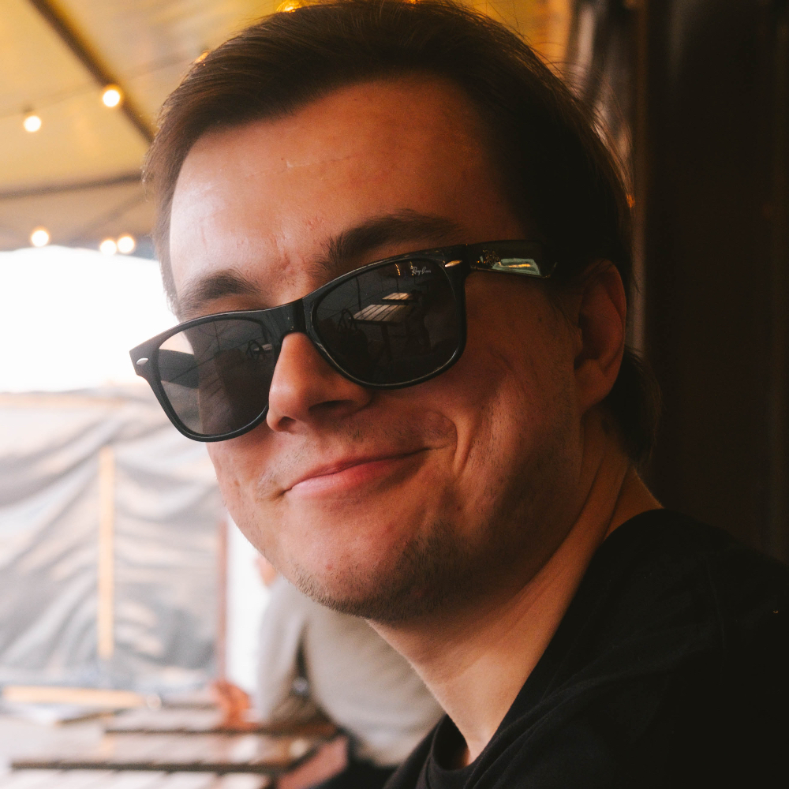

Hi!
I'm Yuriy Grigoryev, C/C++ developer currently working on FTData DBMS (a fork of PostgreSQL).
Love wandering, cycling, photography, playing music.
Links
- Telegram or email (yuriy@grigoryev.org)
- GitHub
Languages
- Russian — native
- English — C1 (Advanced)
- German — C1 (Advanced), ZfA DSD II certificate
Education
Bachelor with Honours in Computer Science (2021 – 2025) — SibSUTIS, Novosibirsk.
Got a lot of compilers classes, neural networks and operating systems.
Diploma project was about machine learning for detecting fraud in e-commerce transactions, had a lot of fun with it.
Experience

Centre of Financial Technologies (since March 2026)
FTData DBMS (PostgreSQL)
Primarily working on a CDC sink from OLTP to ClickHouse, which will serve as our OLAP engine, and live-transferring tables from one DBMS instance to another. Also fixing bugs and improving performance of the existing codebase, supporting new extensions and migrating our features to PG18. Never thought I'd be working on this kind of project, but it's a great opportunity to improve systems programming skills.

Eltex (October 2024 – March 2026)
Joined as an Intern and grew into a Middle. Also became a candidate for a subgroup lead role due to strong communication skills.
WLC product (Wireless Local Controller)
- Supported and evolved the core functionality of the Wi-Fi controller for managing and monitoring access points, with a focus on reliable inter-process communication and integration with dependent teams (QA, Web, etc.).
- Served as a maintainer of a FreeRADIUS-based authentication server: from integrating the server into production to developing custom modules, fixing logic, updating dependencies, closing vulnerabilities, and maintaining CI/CD.
- Improved a high-load subsystem for access point health monitoring: eliminated crashes and memory leaks, and increased performance.
- Refactored existing components.
- Performed design review and code review for adjacent systems.
- Mentored new team members.